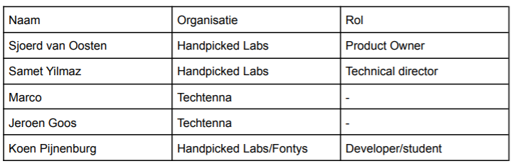
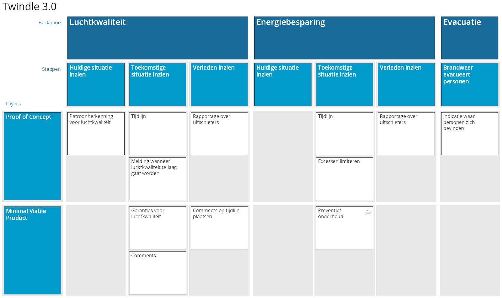

Analyseren
Voordat begonnen wordt aan het ontwikkelen van het product is het belangrijk om te weten wie er bij de applicatie betrokken zijn en wat zij belangrijk vinden. Hiervoor is tijdens het opstellen van het project is de volgende vraag gesteld:
Wie zijn de gebruikers van Twindle?
In dit hoofdstuk zal deze vraag beantwoord worden door middel van een stakeholders analyse. Hierna zal verder onderzocht worden wat de behoefte is van deze stakeholders door gebruik te maken van story mapping technieken.
Stakeholders analyse
Om te bepalen welke partijen er relevant zijn voor het project is een stakeholders analyse uitgevoerd 1. De methodiek om stakeholders analyse uit te voeren bestaat uit de volgende onderdelen: Identificatie- , prioriteren- en het begrijpen van de stakeholders2.
Identificeren
Om de stakeholders te kunnen identificeren is een brainstormsessie gehouden. Het resultaat van deze sessie is een mindmap van alle personen of entiteiten die invloed hebben op het project. In de onderstaande afbeelding is deze mindmap te zien.

Prioriteren
De stakeholders die in het vorige hoofdstuk geïdentificeerd zijn zullen in dit hoofdstuk worden geprioriteerd. Dit wordt gedaan door te kijken wat hun niveau van invloed is en hoeveel belang zij hebben bij het project. In het onderstaande “Stakeholder Power Interest Grid” wordt dit gevisualiseerd.

Begrijpen
De volgende stap is om, per stakeholder, te begrijpen wat hun relatie is tot het project. Dit is gedaan door per stakeholder categorie een aantal vragen te stellen en te beantwoorden 3. Gebaseerd op deze vragen is het onderstaande communicatieplan opgesteld.

Story mapping
Tijdens het project zal een agile werkwijze worden gehanteerd. Een van de onderdelen hiervan is een product backlog waarin alle taken zijn vastgelegd. De techniek die gebruikt is voor het opstellen van deze backlog is story mapping4. In dit hoofdstuk wordt de voorbereiding en conlusie van deze story mapping sessie5 toegelicht.
Voorbereiding
Aan de hand van het communicatie plan, zie afbeelding 3: Communicatie plan is een lijst met personen opgesteld die aanwezig moeten zijn bij de story mapping sessie.

Personas zijn gebruikt worden om een duidelijker beeld bij de gebruikers van de applicatie te krijgen. Uiteindelijk is vastgesteld dat er twee gebruikersgroepen binnen de applicatie zijn 6. Hotelmanagers & consumers.
Resultaat
De story mapping sessie heeft plaatsgevonden op 02-03-2021. Om iedereen duidelijk te maken wat er verwacht werd was een korte presentatie gegeven. Daarna is de onderstaande story map opgesteld. Deze is gebruikt om via Trello een backlog op te stellen. 